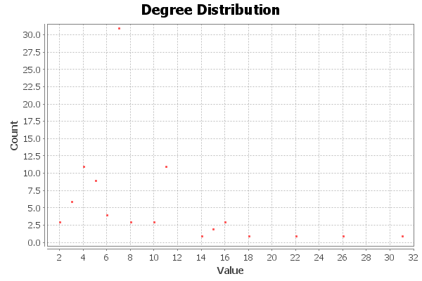
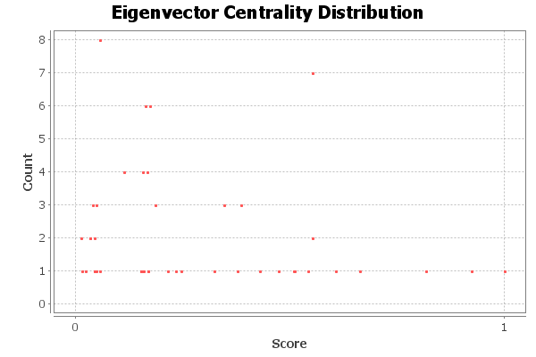
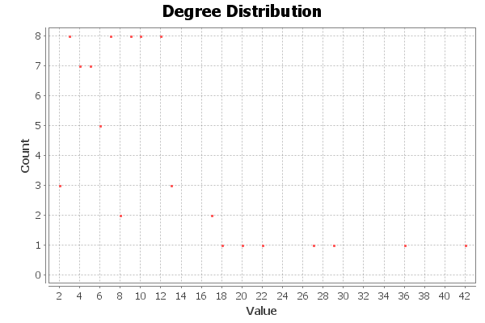
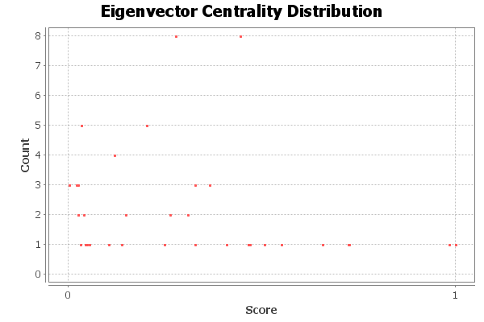
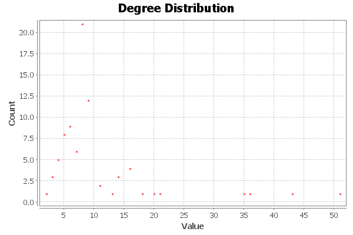
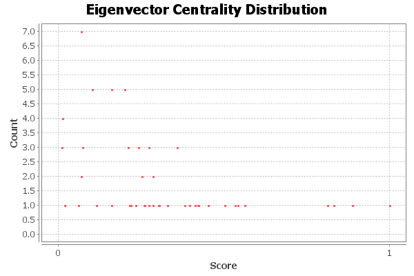

Kamchatka Degree Report
Results:
Average Degree: 9.342

Kamchatka Eigenvector Centrality Report
Parameters:
Network Interpretation: undirected
Number of iterations: 100
Sum change: 0.011909501353148114
Results:

Baja Degree Report
Results:
Average Degree: 7.890

Baja Eigenvector Centrality Report
Parameters:
Network Interpretation: undirected
Number of iterations: 100
Sum change: 0.004015630007391807
Results:

Rabat Degree Report
Results:
Average Degree: 9.854

Rabat Eigenvector Centrality Report
Parameters:
Network Interpretation: undirected
Number of iterations: 100
Sum change: 0.004493682907212601
Results:
